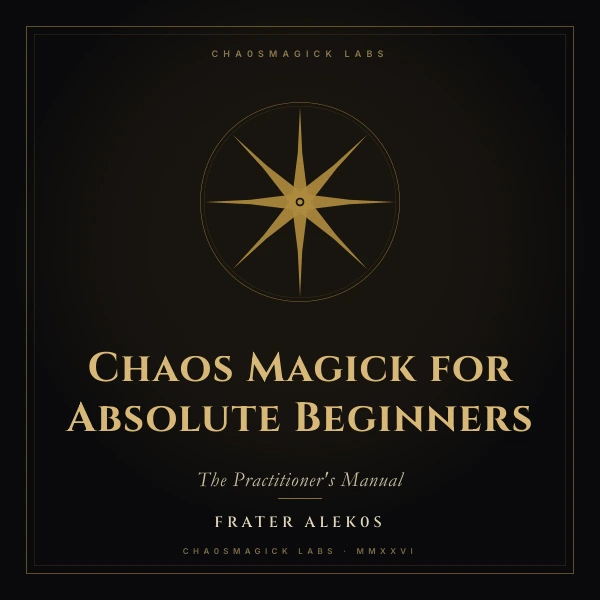

Chaos Magick for Absolute Beginners: The Practitioner's Manual
You don't need a lineage, a robe or permission. You need a method that works, and the discipline to test it.
$9.99 USD
Want all 7 books?
The complete bundle is $29.99 (49% off the $58.93 bought separately). This title is included.
Get the Bundle — $29.99 →What the book actually teaches
Four parts, twenty chapters, one rule: if it works, keep it; if it doesn't, throw it away. This is a working manual, not a history of the tradition, and it assumes you have never cast a circle in your life.
The four parts
- Sigil magick, the Spare method, step by step. Write the intent, reduce it to a glyph, charge it, fire it, forget it. The forgetting is the part beginners skip, and the part the method depends on.
- Gnosis. Six gates into the state where the work happens, plus the markers that tell you that you are actually there rather than daydreaming.
- Servitors and thoughtforms. How to design one, feed it and dismiss it without haunting yourself afterwards.
- The rest of the toolkit. Banishing and grounding as a daily firewall and a panic button, lunar and planetary timing, divination as pattern recognition, cut-ups, egregores and pop-culture godforms.
What comes with it
- A 15-minute Field Mission at the end of every chapter. Work you do, not theory you admire.
- A glossary of more than 60 terms, so nothing is left as a vibe.
- Correspondence tables and six ready-to-use ritual scripts.
- A troubleshooting guide for the weeks when nothing happens.
- Real QR codes to twelve companion apps for sigil generation, dream work, lunar timing and a magical diary.
- A chapter on safety: contraindications and grounding. This is treated as a technology, not a religion, and what you do with it is your responsibility.
One-time purchase. Lifetime access. Instant download.